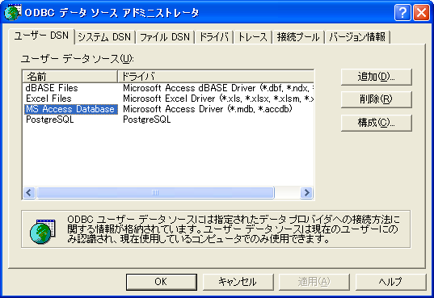
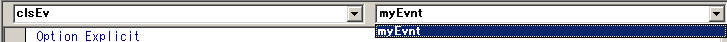
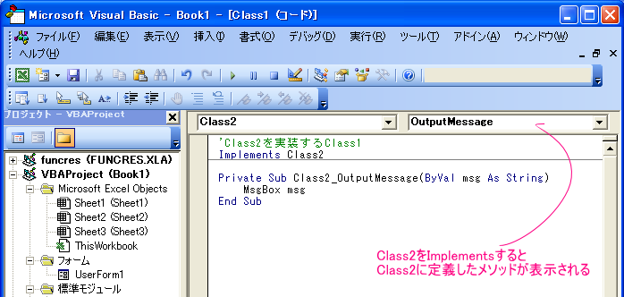

■共有を巡るコード
Sub 共有と排他の切り換え()
Dim strMepath As String
Application.DisplayAlerts = False
strMepath = _
ThisWorkbook.FullName
If ThisWorkbook.MultiUserEditing Then
ThisWorkbook.ExclusiveAccess
MsgBox "排他にしました", , _
ThisWorkbook.Name
Else
ThisWorkbook.SaveAs _
Filename:=strMepath, _
AccessMode:=xlShared
MsgBox "共有にしました", , _
ThisWorkbook.Name
End If
Application.DisplayAlerts = True
End Sub
Sub ブックの共有ダイアログ表示()
Dim mydig As Dialog
With Application
.DisplayAlerts = False
.Dialogs(xlDialogFileSharing).Show
.DisplayAlerts = True
End With
End Sub
'wscript.shell オブジェクトを参照設定する場合は
'Windows Script Host Object Modelにチェックを入れる
Sub ADOデータベースへ接続テーブルの値を取り込む()
Dim myCon As Object
Dim myRS As Object
Set myCon = CreateObject("ADODB.Connection")
Set myRS = CreateObject("ADODB.Recordset")
With myCon
'.Open "file name=" & CreateObject("wscript.shell").specialfolders("desktop") & "\a.udl;"
.connectionstring = _
"Provider=Microsoft.Jet.OLEDB.4.0;" & _
"Data Source=c:\my documents\access\家計簿.mdb"
.Open
End With
myRS.Open "t_test", myCon
Sheet1.[a1].CopyFromRecordset myRS
myRS.Close
Set myRS = Nothing
Set myCon = Nothing
End Sub
'あらゆるワークシート関数を利用する技（TIMEVALUE編：1ミリ秒を表現する）
Sub TimeTest()
Dim dtm As Double
dtm = [TIMEVALUE("01:23:45.678")]
Debug.Print WorksheetFunction.Text(dtm, "hh:mm:ss.000")
dtm = Application.Evaluate("=TIMEVALUE(""12:34:56.789"")")
Debug.Print WorksheetFunction.Text(dtm, "hh:mm:ss.000")
End Sub
Sub シート上のテキストボックスの値1()
Dim txb As TextBox
TextBox1.Value = 1
End Sub
Sub シート上のテキストボックスの値2()
Dim txb As OLEObject
Set txb = OLEObjects("TextBox1")
txb.Object.Value = "aaa"
End Sub
Sub ユーザー名の取得()
Dim wAry, I, J
wAry = ActiveWorkbook.UserStatus
For I = 1 To UBound(wAry)
With ActiveSheet
For J = 1 To 3
.Cells(I, J) = wAry(I, J)
Next
End With
Next
End Sub
Sub テキストファイルからデータを瞬時に読み込む()
'全てのデータがA1セルに展開される。セルの文字数の制限を受ける
Dim TargetFile As String, n As Long, buf As String
Dim tm As Single
tm = Timer
n = FreeFile
TargetFile = ThisWorkbook.Path & "\outdata.csv"
buf = Space(FileLen(TargetFile))
Open TargetFile For Binary As #n
Get #n, , buf
Close #n
Worksheets("aaa").Range("A1") = buf
MsgBox Timer - tm
End Sub
Sub バッチファイル実行()
Dim oShell As Object
Set oShell = CreateObject("wscript.shell")
oShell.Run "%comspec%" & " /c c:\windows\ﾃﾞｽｸﾄｯﾌﾟ\aaa\deleteF.bat"
Set oShell = Nothing
End Sub
Sub 配列の配列のTEST()
Dim ary1
Dim ary2
Dim ary1and2
Dim i As Long, j As Long, k As Long
ary1 = Array("a", "b", "c")
ary2 = Array("1", "2", "3")
ary1and2 = Array(ary1, ary2)
For k = LBound(ary1and2) To UBound(ary1and2)
For i = LBound(ary1and2(k)) To UBound(ary1and2(k))
Debug.Print ary1and2(k)(i)
Next i
Next k
End Sub
'クリップボードからボタンのFACEに画像貼り付け
commandbars("ユーザー設定 1").Controls(1).pasteface
Sub グラフを画像として別シートに貼り付ける()
Dim myGrf As Chart
Dim myPict As Picture
Dim myGrfWS As Worksheet
Dim myPrintWS As Worksheet
Set myGrfWS = Sheet1
Set myPrintWS = Sheet2
With myGrfWS
Set myGrf = .ChartObjects(1).Chart
myGrf.CopyPicture _
Appearance:=xlScreen, _
Format:=xlPicture, _
Size:=xlScreen
End With
Set myPict = myPrintWS.Pictures.Paste
With myPict
.Top = 12
.Left = 12
.Height = 100
.Width = 13
End With
End Sub
■ペイントに貼り付ける
ねむり猫 2006/08/06（日）
14:51:07 パスワード
Sub Mspaint_Copy()
Sheets("Sheet1").Range("A1:g3").CopyPicture _
Appearance:=xlScreen, Format:=xlPicture
'参照設定しておくこと windows script host object model
'VBEのツールで参照設定しておいてください。
'みつからなければMSのサイトでダウンロードできたと思います
Dim Ws As WshShell
Set Ws = CreateObject("WScript.Shell")
Ws.Run "mspaint", vbNormalFocus
Ws.Popup "はりつけ", 1
Ws.SendKeys "^(v)" 'ペイントブラシに貼り付ける
Ws.SendKeys Keys:="%fs" '---保存のダイアログ表示
Ws.SendKeys Keys:="TEST-1.JPEG" '---保存するファイル
名入力
Ws.SendKeys Keys:="{Enter}" '---[Enter]を押す
End Sub
■名前と苗字を分解(苗字名前の間にスペースとか無い場合の対処）
Public Function getNamae(ByVal a1 As Excel.Range) As String
If a1.Phonetics.Count = 0 Then a1.SetPhonetic
getNamae = Right$(a1, a1.Phonetics(2).Length)
End Function
＃勿論半分機械任せなので、間違える場合もままあります。
'-------------------------------------------------------------------
■
Sub 方眼用紙作成()
'エクセルの印刷精度は当てに出来るのか？
'ワードの表で作った方が確実
Const limitHeight_Cm As Long = 14.4286111111111
Dim myCm As Variant
Dim colRatio As Long
myCm = 1 '←単位Cm：方眼紙の一辺の長さ。任意に指定；
If myCm > limitHeight_Cm Then
MsgBox Format$(limitHeight_Cm, "#.#") & _
"を超えての指定はできません"
Exit Sub
End If
With ActiveSheet
myCm = Application.CentimetersToPoints(myCm)
.Rows.RowHeight = myCm
'列のポイント値を取得
.Columns.ColumnWidth = _
myCm _
* .Columns(1).ColumnWidth _
/ .Range("a1").Width
End With
End Sub
'■adodbstream msxml2.SMLHTTP
y sakuda
[HomePage] 2006/09/05（火）
00:35:11 削除できません
Lzhの解凍はWindowsの作りつけ機能だけでは無理ですので、
なんらかのツールを調達するひつようがありますが、
Webからのダウンロードは↓見たいなことで簡単にできます。
Mougのバナーをダウンロードします。
Sub DownLoad()
Dim wHUrl As String
Dim wHTTP As Object, wADOStrm As Object
wUrl = "http://www.moug.net/img/bnr_img/blogbaner.gif"
Set wHTTP = CreateObject("msxml2.XMLHTTP")
wHTTP.Open "GET", wUrl, False
wHTTP.send
If wHTTP.Status <> 200 Then
MsgBox "Error = " & wHTTP.Status & " " & wHTTP.statusText
Exit Sub
End If
Set wADOStrm = CreateObject("adodb.stream")
wADOStrm.Type = 1
wADOStrm.Open
wADOStrm.write wHTTP.responseBody
wADOStrm.savetofile "c:\giffile.gif", 2
MsgBox "ダウンロード完了"
End Sub
■
'ゴミ箱を空にする１
'Microsoft Shell Controls And Automation
'Micorsoft ScriptiongRuntime
Sub ゴミ箱を空にする１()
Call s_deleteFromRecycled("xls")
End Sub
Sub s_deleteFromRecycled(Optional strFilter As String)
Dim objShell32 As Shell32.Shell
Dim objFSO As Scripting.FileSystemObject
Dim objRecycleFoler As Shell32.Folder
Dim objItem As Shell32.FolderItem
Set objShell32 = New Shell32.Shell
Set objFSO = New Scripting.FileSystemObject
Set objRecycleFoler = objShell32.NameSpace(10)
If objRecycleFoler Is Nothing Then Exit Sub
On Error Resume Next
For Each objItem In objRecycleFoler.Items
If objItem.Path Like "*." & strFilter Then
objFSO.DeleteFile objItem.Path, True
End If
Next
End Sub
Function 検索ウィンドウ表示()
Dim objsample As Shell
Set objsample = New Shell
objsample.FindFiles '検索画面を表示させます。
Set objsample = Nothing '開放します。
End Function
Sub ゴミ箱を空にする2()
Dim mywin As Object
Set mywin = CreateObject("Shell.Application")
mywin.NameSpace(10).Items.Item.InvokeVerb "ごみ箱を空にする(&B)"
End Sub
'■タイトルバーのアプリケーションアイコンを制御する
' 井川はるき 2007/09/14（金）
'09:41:52 パスワード
'XL2007だと、元々タイトルバーにアイコンはなくて、Officeボタンが
'あるので、そこから変えないといけないように思います。
'2003まででしたら、
Option Explicit
Private Const WM_SETICON As Long = &H80&
Private Const ICON_BIG As Long = &H1&
Private Declare Sub ExtractIconExA Lib "shell32.dll" ( _
ByVal lpszFile As String _
, ByVal nIconIndex As Long _
, phiconLarge As Long, phiconSmall As Long _
, ByVal nIcons As Long)
Private Declare Sub SendMessageA Lib "user32" ( _
ByVal hWnd As Long, ByVal wMsg As Long _
, ByVal wParam As Long, ByVal lParam As Long)
Sub Sample()
Dim IcoFName As String
Dim hIcon As Long
IcoFName = "C:\temp\test.ico"
ExtractIconExA IcoFName, 0&, hIcon, 0&, 1&
SendMessageA Excel.Application.hWnd _
, WM_SETICON, ICON_BIG, hIcon
End Sub
'のような感じでできますけど（2007でも「すべてのウィンドウを
'タスクバーに表示する」のチェックをはずせば、タスクバーの
'アイコンは変わると思います）。
■最終保存者を表示する
Sub Macro1()
MsgBox ThisWorkbook.BuiltinDocumentProperties("Last author").Value
End Sub
■コントロールID一覧作成(xl2003)
Option Explicit
'コマンドバーに付属するコマンドをリストアップする
Sub controlsListUp()
Dim bar As CommandBar
Dim cntrl As CommandBarControl
Dim ws As Worksheet
Set ws = ThisWorkbook.Worksheets.Add
For Each bar In Excel.CommandBars
For Each cntrl In bar.Controls
Call subCntrolslistUp(ws, bar, cntrl)
Next
Next
End Sub
'コマンドバーのコントロール情報を抽出する
Sub subCntrolslistUp( _
ws As Worksheet, _
bar As CommandBar, _
cntrl As CommandBarControl)
Static level As Long
Dim itmCnt As Long
Dim subCntrls As CommandBarControls
Dim tgtRng As Range
Dim vntDataAry As Variant
Dim vntTitleAry As Variant
Dim rng As Range
Dim offsetCnt As Long
'一層目か二層目以降かの切り分け
If level Then
'二層目以降
With ws
itmCnt = 4
'書き込みレンジ
Set tgtRng = _
.Cells(ws.Rows.Count, _
(level + 1) * _
itmCnt - itmCnt + 1 + _
IIf(level > 0, 3, 0)) _
.End(xlUp) _
.Resize(, itmCnt).Offset(1)
offsetCnt = _
ws.Cells.SpecialCells(xlCellTypeLastCell).Row - tgtRng.Row
If offsetCnt > 0 Then
Set tgtRng = tgtRng.Offset(offsetCnt)
End If
'書き込みデータ
On Error Resume Next
'Xl2007 で
'commandbars("PivotTable Context Menu"). _
controls("レポートにプロパティを表示(&P)"). _
controls(3).caption
'を取得する時トラップ出来ないエラー(-2147417848)
'が発生した。CallByNameでCaption を取得すると
'エラー（440）をトラップする事が出来た。。
vntDataAry = _
Array( _
"'" & CallByName(cntrl, "Caption", VbGet), _
cntrl.ID, _
cntrl.Index, _
GetTypeName(cntrl.Type))
If Err.Number <> 0 Then
vntDataAry = _
Array( _
"'ERR：" & Err.Number & "-" & Err.Description, _
cntrl.ID, _
cntrl.Index, _
GetTypeName(cntrl.Type))
End If
On Error GoTo 0
'データのタイトル
vntTitleAry = _
Array( _
"level" & level + 1 & "ControlCaption", _
"level" & level + 1 & "ControlID", _
"level" & level + 1 & "ControlIndex", _
"level" & level + 1 & "ControlType")
End With
Else
itmCnt = 7
'一層目
With ws
'書き込みレンジ
Set tgtRng = _
.Cells(ws.Rows.Count, _
(level + 1) * itmCnt - itmCnt + 1) _
.End(xlUp) _
.Resize(, itmCnt).Offset(1)
'書き込みデータ
vntDataAry = _
Array( _
bar.Name, _
bar.NameLocal, _
bar.Index, _
"'" & cntrl.Caption, _
cntrl.ID, _
cntrl.Index, _
GetTypeName(cntrl.Type))
'データのタイトル
vntTitleAry = _
Array( _
"BarName", _
"BarLocalName", _
"BarIndex", _
"ControlCaption", _
"ControlID", _
"ControlIndex", _
"ControlType")
End With
End If
With tgtRng
.Value = vntDataAry
If level Then
Set rng = ws.Range(ws.Cells(.Row, 1), _
.Cells(1).Offset(, -1))
With rng
If WorksheetFunction.CountA(rng) = 0 Then
.Value = .Offset(-1).Value
End If
End With
End If
'既にタイトル行を設定していた場合はスル―
With .Offset(-(.Row - 1))
If WorksheetFunction.CountA(.Cells) = 0 Then
.Value = vntTitleAry
End If
End With
'再帰処理
On Error Resume Next
Set subCntrls = cntrl.Controls
On Error GoTo 0
If Not subCntrls Is Nothing Then
'Stop
level = level + 1
For Each cntrl In subCntrls
Call subCntrolslistUp(ws, bar, cntrl)
Next
'サブコントロールがこれ以上見つからなければ
'上の階層に戻る
level = level - 1
End If
End With
End Sub
'コントロールタイプの数値を渡し、値を返す
Private Function GetTypeName(ByRef n As MsoControlType) As String
Select Case n
Case 22
GetTypeName = "msoControlActiveX"
Case 26
GetTypeName = "msoControlAutoCompleteCombo"
Case 1
GetTypeName = "msoControlButton"
Case 5
GetTypeName = "msoControlButtonDropdown"
Case 12
GetTypeName = "msoControlButtonPopup"
Case 4
GetTypeName = "msoControlComboBox"
Case 0
GetTypeName = "msoControlCustom"
Case 3
GetTypeName = "msoControlDropdown"
Case 2
GetTypeName = "msoControlEdit"
Case 16
GetTypeName = "msoControlExpandingGrid"
Case 19
GetTypeName = "msoControlGauge"
Case 8
GetTypeName = "msoControlGenericDropdown"
Case 20
GetTypeName = "msoControlGraphicCombo"
Case 9
GetTypeName = "msoControlGraphicDropdown"
Case 11
GetTypeName = "msoControlGraphicPopup"
Case 18
GetTypeName = "msoControlGrid"
Case 15
GetTypeName = "msoControlLabel"
Case 24
GetTypeName = "msoControlLabelEx"
Case 7
GetTypeName = "msoControlOCXDropdown"
Case 21
GetTypeName = "msoControlPane"
Case 10
GetTypeName = "msoControlPopup"
Case 23
GetTypeName = "msoControlSpinner"
Case 14
GetTypeName = "msoControlSplitButtonMRUPopup"
Case 13
GetTypeName = "msoControlSplitButtonPopup"
Case 6
GetTypeName = "msoControlSplitDropdown"
Case 17
GetTypeName = "msoControlSplitExpandingGrid"
Case 25
GetTypeName = "msoControlWorkPane"
Case Else
GetTypeName = CStr(n)
End Select
End Function
■シートの指定した場所にフォームを出現させる
'Excel内で用いるポイントは72dpi、Windowsが用いるピクセルは96dpi(←これは画面のプロパティ→設定→詳細設定→全般→DPI設定で変化しうる）
Private Sub Worksheet_BeforeDoubleClick(ByVal Target As Range, _
Cancel As Boolean)
Dim startpos As Range
Set startpos = Target.Offset(2, 2)
If Target.Value <> "" Then
With UserForm3
.Show 0
.StartUpPosition = 0
.Left = ActiveWindow.PointsToScreenPixelsX(0) * 72 / 96 + _
startpos.Left
.Top = ActiveWindow.PointsToScreenPixelsY(0) * 72 / 96 + _
startpos.Top
.TextBox1.Value = Target.Value
End With
End If
End Sub
Sub DPI取得()
'要参照 Microsoft WMI Scripting VX.X Library
Dim objWMIService As WbemScripting.SWbemServices
Dim colItems As WbemScripting.SWbemObjectSet
Dim objItem As WbemScripting.SWbemObject
Set objWMIService = GetObject("winmgmts:\\.\root\CIMV2")
Set colItems = objWMIService.ExecQuery( _
"SELECT LogPixels, PelsHeight, PelsWidth FROM Win32_DisplayConfiguration", _
"WQL", wbemFlagReturnImmediately + wbemFlagForwardOnly)
For Each objItem In colItems
Debug.Print "LogPixels: " & objItem.LogPixels
Debug.Print "PelsHeight: " & objItem.PelsHeight
Debug.Print "PelsWidth: " & objItem.PelsWidth
Next objItem
End Sub
Sub DPI取得2()
'XPと2000以外では動作しません
Dim objWMIService As Object, colItems As Object
Dim Service As Object, objItem As Object
Set objWMIService = _
CreateObject("WbemScripting.SWbemLocator").ConnectServer
Set colItems = objWMIService.ExecQuery _
("SELECT LogPixels, PelsHeight, PelsWidth FROM Win32_DisplayConfiguration", _
"WQL", wbemFlagReturnImmediately + wbemFlagForwardOnly)
For Each objItem In colItems
Debug.Print "LogPixels: " & objItem.LogPixels
Debug.Print "PelsHeight: " & objItem.PelsHeight
Debug.Print "PelsWidth: " & objItem.PelsWidth
Next objItem
End Sub
Private Sub UserForm_Initialize()
'-----------------------------------------------------------------
'シート１列１セル１の連続したセルの数のコンボボックスを
'フォーム１に作成する
'-----------------------------------------------------------------
Dim WS As Sheet1
Dim rngR As Range
Dim myCmbs() As Object
Dim myLbls() As Object
Dim IdCmbs As Long
Dim cmbHi As Single
Set WS = ThisWorkbook.Sheets(Sheet1.Name)
With WS
If .[a1].Value = "" Then
Exit Sub
End If
Set rngR = .[a1].CurrentRegion
ReDim myCmbs(rngR.Cells.Count)
ReDim myLbls(UBound(myCmbs) - 1)
End With
For IdCmbs = LBound(myCmbs) To UBound(myCmbs) - 1
With Me
Set myCmbs(IdCmbs) = .Controls.Add("Forms.ComboBox.1")
Set myLbls(IdCmbs) = .Controls.Add("Forms.Label.1")
End With
'作成したコンボボックスの位置決定
cmbHi = 17 ' コンボボックスの高さ
With myCmbs(IdCmbs)
.Top = 20 + cmbHi * 1.5 * IdCmbs
.Left = 120
.Height = cmbHi
.List = rngR.Value
End With
'ラベル
With myLbls(IdCmbs)
.Top = 20 + cmbHi * 1.5 * IdCmbs
.Left = 20
.Height = cmbHi
.Caption = rngR.Cells(IdCmbs + 1).Value
End With
If 20 + cmbHi * 1.5 * IdCmbs + cmbHi > Me.Height Then
'追加されるコンボボックスがフォームの高さを超えたら
'スクロールバー表示
With Me
.ScrollBars = fmScrollBarsVertical
.ScrollHeight = 20 + cmbHi * 1.5 * IdCmbs + cmbHi * 1.5
End With
End If
Next IdCmbs
End Sub
最後のセルの修復（書きかけ）
Option Explicit
Sub s_unUsedCut(WS As Worksheet)
Dim R As Range
Dim R2 As Range
Set R = WS.UsedRange
Do
With R
Set R2 = _
.Rows(CStr(WorksheetFunction.RoundUp(.Rows.Count / 2, 0))) _
& ":" _
& CStr(.Rows.Count)
End With
If Application.CountA(R2) = 0 Then
With R
Set R = _
.Rows("1:" _
& CStr( _
WorksheetFunction.RoundUp( _
.Rows.Count / 2, 0)))
End With
Else
With R
Set R = _
.Rows(CStr(.Rows.Count / 2) _
& ":" _
& CStr(.Rows.Count))
End With
End If
Loop Until R.Rows.Count = 1
R.Select
End Sub
■OSの取得
MsgBox "オペレーティングシステムのバージョン: " & _
Application.Evaluate("=INFO(""osversion"")")
■呼び出すプロシージャ内のエラー処理方法
Sub 呼び出すプロシージャのエラーを処理する方法()
On Error GoTo Err_handle
sub1 ("aaaaaaaaaaaaaaaaaaaaaaaaaaaaaaaaaa")
sub2
Exit Sub
Err_handle:
MsgBox Err.Description, vbExclamation, "エラー"
End Sub
Sub sub1(ByVal myValue As String)
If Len(myValue) > 10 Then
'Raiseメソッドのヘルプより↓
'ユーザー定義のエラーに使用できるのは、513 〜 65535 の範囲の値です。
Err.Raise 514, , "セル A1 に１０文字以上は設定できません"
Exit Sub
End If
'カスタムエラー：[a1]の値は１０文字以内という規則があった場合
[a1].Value = myValue
End Sub
Sub sub2()
'dummy
End Sub
■マザーボード情報の取得
' 投稿日時: 09/05/14 13:05:47
'投稿者: Yuki
'
'こんにちは｡
'参考にして下さい
'マザーボード
Sub wmiMatherBoardInfo()
Dim BaseBoardSet As Object
Dim bb As Object
Set BaseBoardSet = GetObject("winmgmts:{impersonationLevel=impersonate}"). _
InstancesOf("Win32_BaseBoard")
On Local Error Resume Next
For Each bb In BaseBoardSet
Debug.Print bb.Product, bb.Manufacturer
Next
End Sub
■ディスク情報の取得
Sub wmiDiskDriveInfo()
Dim DiskDriveSet As Object
Dim dd As Object
Dim thiscol As Long
Dim capcount As Long
Dim msg As String
On Local Error GoTo Diskinfo_Error
Set DiskDriveSet = GetObject("winmgmts:{impersonationLevel=impersonate}"). _
InstancesOf("Win32_DiskDrive")
For Each dd In DiskDriveSet
Debug.Print "Description: " & dd.Description
Debug.Print "Index: " & dd.Index
Debug.Print "DeviceID: " & dd.DeviceID
Debug.Print "Caption: "; dd.Caption
Debug.Print "Manufacturer: " & dd.Manufacturer
Debug.Print "Model: " & dd.Model
Debug.Print "InterfaceType: " & dd.InterfaceType
Debug.Print "MediaLoaded: " & dd.MediaLoaded
Debug.Print "MediaType: " & dd.MediaType
Debug.Print "Status: " & dd.Status
Debug.Print "Size: " & FormatNumber(dd.Size, 0)
Debug.Print "Partitions: " & dd.Partitions
Debug.Print "BytesPerSector: " & FormatNumber(dd.BytesPerSector, 0)
Debug.Print "SectorsPerTrack:" & FormatNumber(dd.SectorsPerTrack, 0)
Debug.Print "TotalCylinders:" & FormatNumber(dd.TotalCylinders, 0)
Debug.Print "TotalHeads: " & FormatNumber(dd.TotalHeads, 0)
Debug.Print "TotalTracks: " & FormatNumber(dd.TotalTracks, 0)
Debug.Print "TracksPerCylinder: " & FormatNumber(dd.TracksPerCylinder, 0)
Debug.Print
Debug.Print "DispAccess"
Debug.Print
Stop
For capcount = LBound(dd.capabilities) To UBound(dd.capabilities)
Select Case dd.capabilities(capcount)
Case 0: msg = "Unknown "
Case 1: msg = "Other "
Case 2: msg = "Sequential Access "
Case 3: msg = "Random Access "
Case 4: msg = "Supports Writing "
Case 5: msg = "Encryption "
Case 6: msg = "Compression "
Case 7: msg = "Supports Removable Media "
Case 8: msg = "Manual Cleaning "
Case 9: msg = "Automatic Cleaning "
Case 10: msg = "SMART Notification "
Case 11: msg = "Supports Dual Sided Media "
Case 12: msg = "Ejection Prior to Drive Dismount Not Required"
End Select
Debug.Print msg
Next
Next
Diskinfo_Exit:
On Local Error GoTo 0
Exit Sub
Diskinfo_Error:
' Err
End Sub
'■コマンドボタンのIDを取得する
Sub s_TypeCmdBar()
Dim WS As Worksheet
Dim cmc As Object
Dim 行 As Long
Dim strTitle
Dim rngTitle As Range
Set WS = Sheet1
Set rngTitle = WS.[a1:f1]
strTitle = _
Array("TypeName", "Type", "Caption", "ID", "親コントロールNameLocal", "親コントロール.Name")
WS.Cells.Clear
行 = 1
rngTitle.Value = strTitle
For Each cmc In Application.CommandBars.FindControls
rngTitle.Offset(行).Value = _
Array(TypeName(cmc), cmc.Type, cmc.Caption, cmc.ID, cmc.Parent.NameLocal, cmc.Parent.Name)
行 = 行 + 1
Next cmc
End Sub
'-----------------------------------------------------------------------------------------
'■シングルクォーテーション一重引用符の識別
?range("a1").PrefixCharacter
'
'■javascriptの操作
Option Explicit
'Microsoft Internet Controls に参照設定
'Microsoft HTML Object Library に参照設定
Sub js_test()
'Dim objIE As Object
'Set objIE = CreateObject("InternetExplorer.application")
'参照設定していれば、-------------------
'以下の書き方が可能 -------------------
Dim objIE As InternetExplorer
Set objIE = New InternetExplorer
'---------------------------------------
Dim strURL As String
strURL = "C:\Documents and Settings\やま\デスクトップ\test.htm"
With objIE
.Visible = True
.navigate strURL
End With
Do While objIE.Busy = True
DoEvents '起動するまで待つ
Loop
objIE.document.all.ボタン様.FireEvent ("onclick")
Set objIE = Nothing
'▼▼C:\Documents and Settings\やま\デスクトップ\test.htm▼▼
'<script type="text/javascript">
' function test(){
' alert("javascript関数が実行されました");
' }
'</script>
'
'<body>
'<p><button name = "ぼたん様" onclick="test();">click me!</button></p>
End Sub
'■javascriptの操作2------------------------------------------
Private Sub UserForm_Initialize()
Dim strURL As String
strURL = "http://homepage3.nifty.com/homepage_yamaV102/tool/rnd.htm"
Me.WebBrowser1.Navigate strURL
'-- rnd.htmのスクリプト------
//num1、num2を含む範囲で整数の乱数を返す
<script type="text/javascript">
function rangeRandom(num1,num2) {
if((num1 - num2) > 0) {
var big = num1;
var small = num2;
} else {
var big = num2;
var small = num1;
}
var range = big - small + 1;
var number = Math.floor(Math.random()*range) + small;
return(number);
}
</script>
'--------------
End Sub
Private Sub CommandButton1_Click()
Dim strScript As String
strScript = "javascript:function HOGE(){document.body.fushufushu=rangeRandom(1,20)}HOGE()"
Me.WebBrowser1.Navigate strScript
Do
DoEvents
Loop While Me.WebBrowser1.Busy
MsgBox "rangeRandom(1,20)の結果は、" & Me.WebBrowser1.Document.body.fushufushu & "です。"
End Sub
'■ここまで--------------------------------------------------------
■ODBC接続文字列の謎
Sub ODBCでデータベースに接続する()
Dim qryT As QueryTable
Dim strSQL As String
Dim strCon As String
Dim strPth As String
strSQL = "SELECT * FROM T_test"
strPth = CreateObject("wscript.shell").SpecialFolders("desktop")
strPth = strPth & "\Test.mdb"
strCon = "ODBC;DSN=MS Access Database;DBQ=" & strPth
Stop
With Sheet2.QueryTables.Add(Connection:=strCon, _
Destination:=Sheet2.Range("B1"), Sql:=strSQL)
.Refresh
End With
End Sub
strCon = "ODBC;DSN=MS Access Database;DBQ=" & strPth
箇所について、
・DNSの値はODBCデータベースアドミニストレータの
ユーザーDSNタブの[名前]の値を入れたら動作した。

DBQにはDBまでのフルパスをいれれば良いらしい。
QueryTablesのヘルプには以下のサンプルがあるが、
どう解釈したらよいのか判らない。
connstring = _
"ODBC;DSN=96SalesData;UID=Rep21;PWD=NUyHwYQI;Database=96Sales"
この部分は、
'strCon = "ODBC;Driver={Microsoft Access Driver (*.mdb)};Dbq=" & strPth
↑こう書いても動作した。
参考サイトhttp://www.connectionstrings.com/access#p88
■回転させた図の位置を設定する
Sub 図形の回転と位置と大きさ()
Dim myPic As Picture
Dim strPicPth As String
Dim rng As Range
strPicPth = "c:\windows\サンタフェ.bmp"
Set myPic = Sheet1.Pictures.Insert(strPicPth)
Set rng = Sheet1.Range("a1")
With myPic
'回転させた図の位置指定にはコツがある。
'↓この一連の順番が重要。
.Height = rng.EntireColumn.Width
.ShapeRange.IncrementRotation 90#
.Top = rng.Top
.Left = rng.Left
.ShapeRange.LockAspectRatio = msoFalse
.Width = rng.EntireRow.Height
End With
End Sub
■クラスモジュール
▼applicationイベントを拾う
'-Class1----------------------------
Public WithEvents APP As Application
Private Sub APP_WorkbookOpen(ByVal Wb As Workbook)
MsgBox Wb.Name & " を開いた！"
End Sub
'-----------------------------------
'-modul1----------------------------
Dim myclass As New Class1
Sub ignition()
'実行後ブックが開くたびにイベントが発生する
Set myclass.APP = Application
End Sub
'-----------------------------------
▼イベントを発生させる
'Cls_EveTEST--------------------------------
Option Explicit
'イベントを発生させる
Public Event myEvnt(ByRef strMsg As String)
Public Sub evTest()
RaiseEvent myEvnt("イベント発生")
End Sub
'-------------------------------------------
'シートモジュール---------------------------

Option Explicit
'WithEventsを指定できるのはクラスモジュール内のみ。
'New と一緒に指定する事はできない
Private WithEvents clsEv As Cls_EveTEST
Sub イベントのテスト()
Set clsEv = New Cls_EveTEST
clsEv.evTest
End Sub
Private Sub clsEv_myEvnt(str As String)
MsgBox str
End Sub
'-------------------------------------------
▼使い道がわからないが、クラスの初期化と破棄と実行される順序
'-Class1----------------------------
Private Sub Class_Initialize()
Debug.Print "Class_Initialize called" '(2)
End Sub
Private Sub Class_Terminate()
Debug.Print "Class_Terminate called" '(4)
End Sub
Public Sub Test()
Debug.Print "Test called" '(3)
End Sub
'-----------------------------------
'-modul1----------------------------
Sub test()
Dim obj As New Class1
Debug.Print "Dim obj As New Class1" '(1)
obj.Test
End Sub
'-----------------------------------
▼使い道が判らないが、Property を Let する
'-Class11----------------------------
Private namae As String
Private toshi As Integer
Public Property Let name(ByVal s As String)
namae = s
End Property
Public Property Let age(ByVal a As Integer)
toshi = a
End Property
Public Sub OutputData()
Debug.Print namae
Debug.Print toshi
End Sub
'-----------------------------------
'-modul1----------------------------
Option Explicit
Sub useClass()
Dim cls As New Class1
cls.name = "taro"
cls.age = "17"
cls.OutputData
End Sub
'taro
' 17
'-----------------------------------
▼使い道が判らないが、インターフェイス（プロトタイプ）越しにクラスのメソッドを呼び出す
Class2------------------------------
'インターフェイス「Class2」を定義する
'インターフェイスには、メンバ プロシージャの定義だけが含まれる
'プロトタイプ
Public Sub OutputMessage(ByVal msg As String)
End Sub
'-----------------------------------

Class1------------------------------
'Class2を実装するClass1
Implements Class2
Private Sub Class2_OutputMessage(ByVal msg As String)
MsgBox msg
End Sub
'-----------------------------------
UserForm1--------------------------
Private Sub UserForm_Click()
'インターフェイス経由でクラスのメソッドを呼び出す
Dim obj As Class1
Set obj = New Class1
Dim interF As Class2
Set interF = obj
interF.OutputMessage "Hello!"
End Sub
'-----------------------------------
▼使い道は判らないが、Set して Getし、Let して Getする。
Class1------------------------------
Private str As String
Private obj As Object
Public Property Get objGet() As Object
Set objGet = obj
End Property
Public Property Set objSet(o As Object)
Set obj = o
End Property
Public Property Get strGet() As String
strGet = str
End Property
Public Property Let strLet(s As String)
str = s
End Property
'-----------------------------------
'Module1----------------------------
Sub useClass()
Dim obj As New Class1
Set obj.objSet = UserForm1
MsgBox obj.objGet.Caption
obj.strLet = "Hello World!"
MsgBox obj.strGet
End Sub
'-----------------------------------
'MSXML2.XMLHTTPとADODB.Streamの使用例。
''ADODBとMSXMLに参照設定要
Sub htmlソースの取得()
Dim s As String
Dim buf() As Byte
Dim myfile As String
myfile = ThisWorkbook.Path & "\htmlsource.txt"
With New MSXML2.XMLHTTP
'urlの指定
.Open "GET", "http://www2.nict.go.jp/cgi-bin/JST.cgi", False
'"If-Modified-Since" は、HTTP/1.1 (RFC 2616)で定義されている値
'値は過去の日付であれば何でもよいと思われる。
'http://www.studyinghttp.net/cgi-bin/rfc.cgi?2616#Sec14.25
'↓.setRequestHeader ヘッダ名, 値
.setRequestHeader "If-Modified-Since", "Thu, 01 Jun 1970 00:00:00 GMT"
.Send
buf() = .responseBody 'バイナリ型はVBAのByte型で受け取る
End With
With New ADODB.Stream
' XMLHTTPRequestをバイナリで受け取って（responseBody）、
' Streamオブジェクトにバイナリーで書き込んで､
' 内部でエンコードを掛けて､テキスト出力の流れ
.Type = adTypeBinary
.Open
.Write buf()
.Position = 0
.Type = adTypeText
.Charset = "euc-jp"
s = .ReadText
.Close
End With
'必要に応じて↓を処理
'メモ帳はvbLfだけだと改行と解釈しないので読みづらくなる。
s = VBA.Replace(s, vbLf, vbNewLine)
Dim f As Integer
f = FreeFile()
'このページの文字コードはeuc-jpだが、Outputで処理すると
'Shift-JISとして出力される。（結果的にそうなる、不思議だけど）
Open myfile For Output As #f
Print #f, s
Close #f
'以下でオリジナルの文字コードのまま出力される。
' With adoStrm
' .Type = adTypeBinary
' .Open
' .Write IXML.responseBody
' .Position = 0
' .Type = adTypeText
' .Charset = "EUC-JP"
' .ReadText
' .SaveToFile myfile, adSaveCreateOverWrite
' .Close
' End With
End Sub
Sub 正規表現で条件にあう文字列を取り出す()
Dim s As String
s = "aaaaaaaabbbbbbbbbbbbcccccccccc"
'RegExp オブジェクトを使用するには VBScript のバージョン 5 以上が必要です。
'VBScript のバージョン 5 は Microsoft Internet Explorer 5.0 に含まれています。
'ゆえに、これから提示するコードは IE 5.0 以降の環境であれば動作します（三段論法？）。
'アーリーバインディングならMicrosoft VBScript Regular ExpressionsX.X
Dim reg As New VBScript_RegExp_10.RegExp
'With CreateObject("VBScript.RegExp")
With reg
'検索する文字列の正規表現を設定します。
.Pattern = "B+"
'検索対象の文字列全体でパターン マッチングを行う必要があるのか、パターンに一致する最初の文字列のみを検索するのかを示す、ブール (Boolean) 値を設定します。または、値の取得も可能です。
.Global = True
.IgnoreCase = True 'パターン検索で大文字と小文字を区別する必要があるかどうかを示すブール (Boolean) 値を設定します。
'Test : 指定した正規表現に一致する文字列があるかどうかを示すブール (Boolean) 値が返されます。
If .test(s) Then
'Execute : 指定した正規表現に一致した文字列ごとに、Match オブジェクトを含む MatchCollection オブジェクトが返されます。
s = .Execute(s)(0) 'コレクションなのでインデックスを指定して文字列を取り出す。
MsgBox s
Else
MsgBox "条件に一致した文字列は含まれません "
End If
End With
End Sub
■ショートカットキーのわりあて
Private Sub Workbook_Open() '起動時に
Application.OnKey "^{r}", "削除" 'Ctrl+rを削除に割り当て
End Sub
■列挙体---------------------------------
Option Compare Database
Public Enum enmSample
'列挙型の値は省略可能
rekkyo1 = 1 '値の指定を省略すると0,1,2…と割り当てられる
rekkyo2 = 2
rekkyo3 = 3
End Enum
Public Function f_FunctionSample(Optional flg As enmSample) As Long
'flg=とタイプすると"rekkyo1,rekkyo2,rekkyo3"がポップアップされるので
'1,2,3を指定する事と比べ意味がわかりやすくなる
If flg = rekkyo1 Then
f_FunctionSample = 10
ElseIf flg = rekkyo2 Then
f_FunctionSample = 20
ElseIf flg = rekkyo3 Then
f_FunctionSample = 30
End If
End Function
Private Sub ENUM_Test()
MsgBox f_FunctionSample
'0が返る
'▼f_FunctionSample(…とタイプした時点で"rekkyo1,rekkyo2,rekkyo3"がポップアップされるので
'1,2,3を指定する事と比べ意味がわかりやすくなるし、タイプミスも排除できる（すばらしい事だ）
MsgBox f_FunctionSample(rekkyo1)
'10が返る
MsgBox f_FunctionSample(rekkyo2)
'20が返る
End Sub
'列挙体ここまで---------------------------------
■CountIf関数の代わりとなるもの
'指定した列に同じ値が幾つあるのかを右隣りの列に表示する
'countif関数とやっている事は同じだが、
'列単位で一括処理するため、非常に高速
Sub myCntInColumn()
Dim i As Long
Dim lngLast As Long
Dim v As Variant
Dim v1 As Variant
Dim Dic As Object
Dim Rng As Range
Set Dic = CreateObject("Scripting.Dictionary")
With ThisWorkbook.ActiveSheet
lngLast = .Cells(.Rows.Count, 1).End(xlUp).Row
Set Rng = .Range("A1:A" & lngLast)
v = Rng.Value
ReDim v1(1 To lngLast, 1 To 1)
For i = LBound(v) To UBound(v)
If Len(v(i, 1)) <> 0 Then
'v(i,1)がKey Dic(v(i,1))がKeyに対応する値
Dic(v(i, 1)) = Dic(v(i, 1)) + 1 'v(i,1)と同値をカウント
'ここを無理やりIfで分岐させた書き方をすると↓
'If Dic.Exists(vi,1) Then
' Dic.Item(v(i, 1)) + 1
'Else
' Dic.Add v(i, 1), 1
'End If
End If
Next i
For i = LBound(v) To UBound(v)
v1(i, 1) = Dic(v(i, 1))
Next i
Rng.Offset(, 1).Value = v1
End With
Set Dic = Nothing
End Sub
■ワークシートオブジェクト.Pictures.Insert(画像パス）の代わりとなるもの。
Pictures.Insertは「非表示のメンバ」なので、積極的に使わない方がよいかもしれない。
Shapes.AddPictureが推奨される代替メソッド
Sub InsPict()
Dim objFileName As String
Dim objShape As Shape
objFileName = Application.GetOpenFilename _
("Pictures (*.gif; *.jpg; *.bmp; *.tif),*.gif; *.jpg; *.bmp; *.tif", , "画像選択ダイアログ")
'アクティブセルの位置に図の幅と高さを Double型 50 ポイントに指定して画像を挿入します
'
Set objShape = ActiveSheet.Shapes.AddPicture( _
fileName:=objFileName, _
LinkToFile:=False, _
SaveWithDocument:=True, _
Left:=Selection.Left, _
Top:=Selection.Top, _
Width:=50#, _
Height:=50#)
'図のサイズを元のサイズに戻します
'!1はSingleで元のサイズに対する倍率を指定している
With objShape
.ScaleHeight 1!, msoTrue
.ScaleWidth 1!, msoTrue
End With
End Sub
■役に立つかどうか疑問あるが、Doubleを扱えるMod と \ 演算子の代用関数
割り算ではなく、ひたすら引き算をループさせているので、
引数によっては超低速処理になる。Modや\でオーバーフローする事を
確認してから下請けに渡す関数にすると使いどころはあるかもしれない。
Option Explicit
'Double を演算できる Mod 関数
'(Mod関数が扱えるのはLongの範囲)
Function Mod_dbl(num1 As Double, num2 As Double) As Double
Dim dblNum As Double
Dim minusFlg As Boolean
If num1 < 0 Then
minusFlg = True
Else
minusFlg = False
End If
num1 = bas(num1)
num2 = Abs(num2)
dblNum = num1
If num1 >= num2 Then
Do
If dblNum < num2 Then
Exit Do
End If
dblNum = dblNum - num2
Loop
Mod_dbl = dblNum * IIf(minusFlg, -1, 1)
Else
Mod_dbl = num1 * IIf(minusFlg, -1, 1)
End If
End Function
'Double の商を返せる関数
'\ 演算子が扱えるのは long の範囲
Function Div_dbl(num1 As Double, num2 As Double) As Double
Dim dblNum As Double
Dim minusFlg As Boolean
Dim rslt As Double
If num1 < 0 Then
minusFlg = True
Else
minusFlg = False
End If
If num2 < 0 Then
If minusFlg Then
minusFlg = False
End If
Else
If minusFlg Then
minusFlg = True
End If
End If
num1 = Abs(num1)
num2 = Abs(num2)
dblNum = num1
If num1 >= num2 Then
Do
If dblNum < num2 Then
Exit Do
End If
dblNum = dblNum - num2
rslt = rslt + 1
Loop
Div_dbl = rslt * IIf(minusFlg, -1, 1)
Else
Div_dbl = 0
End If
End Function